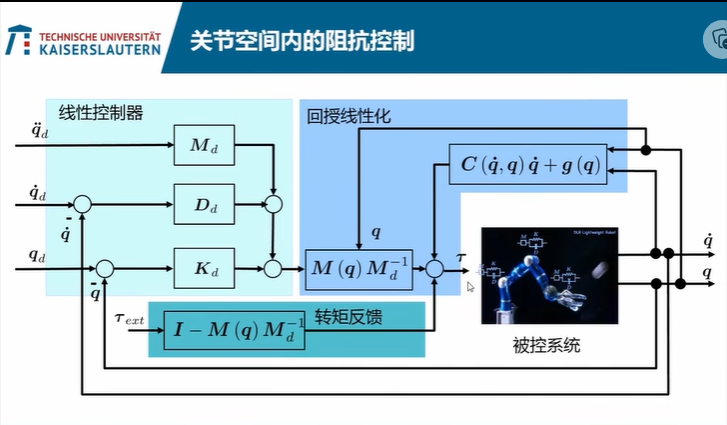
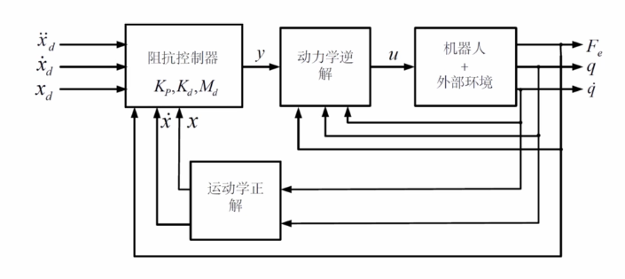
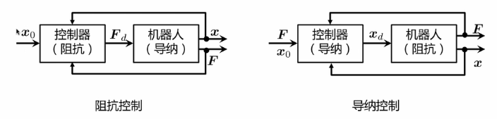

阻抗和导纳控制
Table of Contents
机器人交互控制
-
直接力控 直接对完成任务所需要的力做一个设定，利用力或者转矩的传感器实时对力进行反馈，从而达到控制
存在的一些问题：使用的一些力的传感器一般会比较贵，也会出现精度和噪声的情况，其次就是不容易对力进行设定
-
间接力控
- 柔顺控制
- 被动柔顺 使用一些机械的设备，例如弹簧之类的设备使机器人在与外界交互中出现一些柔顺性
- 主动柔顺 通过软件使机器人对外界的环境做出一些柔顺性
- 阻抗/导纳控制 让机器人在与外界交互的过程中，包含有质量，弹簧，阻尼这样一个二阶阻抗系统的性质
- 关节空间
- 笛卡尔空间 也就是三维空间坐标系
- 柔顺控制
-
力位混合控制
机器人在某个方向上做力的控制，在正交的方向上做位移的控制
阻抗控制
关节空间内的阻抗控制
目标：让机器人的每一个关节能体现出由弹簧-阻尼-质量组成的二阶系统的动态特性，其中 $q_d$ 是对关节角度的设定值， $q$ 是实际测量值，那么 $\overline{q}$ 就是一个控制误差，左边就是对这个控制的动态误差的描述，M, D, K 就是三个矩阵，表示质量，阻尼和弹性系数，这个q矩阵的大小是和关节数自由度量有关的，一般会设计为对角阵，也就是每个关节独立，三个矩阵必须正定才能保证整个二阶系统的稳定性，右侧就是关节受到的外力产生的力矩
$M_d\overset{..}{\overline{q}}+D_d\overset{.}{\overline{q}}+K_d\overline{q} = \tau_{ext}$ $\overline{q} = q_d-q$
实现机器人的动态特性
机器人动力学方程：
$M(q)\overset{..}{q}+C(\overset{.}{q}, q)\overset{.}{q} + g(q) = \tau-\tau_{ext}$
其中 $q,\overset{.}{q},\overset{..}{q}$ 分别代表机器人的关节角度，角速度，角加速度，M，C，g分贝代表了惯性矩阵，[科里奥利效应](科里奥利效应 (baidu.com))，重力效应，这里的M矩阵是与机器人的机械结构和运动有关的，是一个转动惯量矩阵，是一个不能随意定义的矩阵，这三个矩阵都是和机器人的运动状态有关的，运动状态改变，三个矩阵的数值也会发生改变，需要实时的计算这三个矩阵。
$\tau$ 是输入力矩，是驱动电机产生的力矩， $\tau_{test}$ 是外界产生的力矩也就是阻力矩。两个力矩之和控制了机器人的运动状态
-
一个小栗子：
假设机器人的控制任务是跟随一条轨迹运动，即 $q_d,\overset{.}{q_d},\overset{..}{q_d}$ 就可以定义如下关节转矩控制的输入，也就是电机的转矩大小
$$ \tau = M(q)\overset{..}{q_d} + C(\overset{.}{q},q) + g(q) + M(q)M_d^{-1}(D_d\overset{.}{\overline{q}} + K_d\overline{q}) + (I-M(q)M_d^{-q})\tau_{ext} $$第一个式子是和机器人动力学方程是一样的，唯一区别是其中的角加速度为设定值，第二个式子与之前定义的二阶系统的参数有关，同时还包含着控制误差的反馈，括号外面的是一个转动惯量矩阵，最后一个式子，是机器人受到外力力矩的反馈再乘以一个系数。

把阻抗控制分为3部分
- 回授线性化，为了让机器人对外体现出一种线性化的特征，并且如此我们可以使用一个线性控制器来控制它
- 线性控制器，此时控制设定值为线性角度，线性角速度，线性角加速度，同时这些值也可以乘以不同的增益，这些增益就是之前的二阶系统的质量，阻尼系数和弹性系数，对关节角加速度实行的是前馈控制，关节角加速度和角度实行负反馈控制，三部分之和就是线性控制系统的输出
- 转矩反馈，根据反馈的转矩来乘以一个系数，合并到输入中，作为力矩的输入
总结
- 阻抗控制是通过控制机器人运动实现间接力控的方法
- 最终目的不是直接控制机器人的运动，也不直接控制机器人与外界的接触力，而是控制两者之间的动态关系。
- 要想实现理想的阻抗控制的条件
- 机器人动态模型和相关参数已知
- 机器人关节角，角速度实时反馈
- 机器人关节力矩实时反馈
- 机器人的转矩控制
一些变化：
-
不能提供关节力矩的实时反馈：
- 删除与关节力矩相关的部分
带入机器人动力学方程中
$$ M_d\overset{..}{\overline{q}}+D_d\overset{.}{\overline{q}}+K_d\overline{q} = M_dM^{-1}(q)\tau_{ext} $$这种情况下各个关节会存在耦合的情况，M, D, K 是对角矩阵，但是右侧存在M(q)矩阵，所以不可能是对角阵，所以各个关节之间会存在耦合
- 还可以设计 $M_d = M(q)$
这种情况下，关于 $\tau_{ext}$ 的一项就会为0，
代入运动学方程中为
$$ M(q)\overset{..}{\overline{q}}+D_d\overset{.}{\overline{q}}+K_d\overline{q} = \tau_{ext} $$结果是，机器人仍然能体现出阻抗性，但是与质量相关的项存在耦合关系
优点：由于关节加速度很小，所以对系统影响很小，耦合作用相对较弱。
-
简化
令 $\overset{..}{q_d},\overset{.}{q_d}$ 为0，同时忽略 $M_d,M(q)$
此时 $\tau = C(\overset{.}{q},q)\overset{.}{q}+g(q)-D_d\overset{.}{q}+K_d\overline{q}$ 这种控制被称为KD+控制， $K_d$为p控制器， $D_d$为d控制器，同时加上了非线性补偿 $C(\overset{.}{q},q)\overset{.}{q}$ 。
带入动力学方程：
$-M(q)\overset{..}{q}-D_d\overset{.}{q}+K_d\overline{q} = \tau_{ext}$
其中 $M(q)\overset{..}{q}$ 几乎为0，机器人仍然体现出一些阻抗特性，但是这种阻抗特性是由 D和K提供的，但是会与之前设定的标准值相差较大。当关节加速度较小时，几乎可以看作为一阶系统，有时候被定义为关节柔顺控制。
笛卡尔空间内的阻抗控制
目标：让机器末端执行器在笛卡尔空间内的每个方向上都体现出由弹簧-阻尼-质量组成的二阶系统的动态特性，但是要注意，目标方向数量应该小于等于自由度的数量，最多可以定义六个方向上的运动
$M_d\overset{..}{\overline{x}}+D_d\overset{.}{\overline{x}}+K_d\overline{x} = F_{ext}$ $\overline{x} = x_d-x$
假定控制任务是跟随一条轨迹
$$ \tau = M(q)J^{-1}(q)M_d^{-1}(M_d\overset{..}{x_d}+K\overset{.}{\overline{x}} + D\overline{x}-M_dJ^{'}(\overset{.}{q},{q})\overset{.}{q})+(J^T(q)-M(q)J^{-1}(q)M_d^{-1})F_{ext}+g(q)+C(q,\overset{.}{q})\overset{.}{q} $$公式分为3个部分：
-
第一个部分与之前的几乎一样，但是加上了雅各比矩阵来进行笛卡尔空间到关节空间之间的转换，后面出现雅各比矩阵的导数是由于速度和加速度的求解，物理层面上就是为了抵消一部分由加速度产生的惯性力的作用 $M_dJ^{'}(\overset{.}{q},{q})\overset{.}{q}$
$\overset{.}{x} = J(q)\overset{.}{q}$ ⇒ $\overset{..}{x} = J(q)\overset{..}{q}+J^{'}(\overset{.}{q},{q})\overset{.}{q}$
-
第二部分就是把外界的力通过笛卡尔空间转化为关节空间的力
-
第三部分是机器人自身运动过程中来源于自身的一些非线性的力
将关节控制输入表达式带入到机器人动力学方程中可以得到所期望的二阶系统动态方程，理想状态下，可以体现出完全解耦的阻抗特性
实际操作中需要：
- 求解雅各比矩阵的逆矩阵和导数矩阵
- 精确测量机器人执行器末端的受到的外力
- 精确的机器人运动学以及动力学模型
- 机器人关节位置和转速的测量
- 机器人关节转矩控制
- 不要过度接近机器人的奇异点，会导致雅各比矩阵的求解误差教大，机器人运动受限
笛卡尔空间的控制结构

阻抗控制器： $K_p,K_d,M_d$ 是控制器的增益，尽量减小设定值与机器人在空间运动的实际值的误差，之后产生一个虚拟的控制输入y
通过运动学逆解得到在实际空间中所需要产生的力矩
一些变化
-
不能提供末端外力的实时反馈
-
直接删去与外力相关的部分
$$ \tau = M(q)J^{-1}(q)M_d^{-1}(M_d\overset{..}{x_d}+K\overset{.}{\overline{x}} + D\overline{x}-M_dJ^{'}(\overset{.}{q},{q})\overset{.}{q})+g(q)+C(q,\overset{.}{q})\overset{.}{q} $$ -
带入机器人动力学方程中
$$ M_d\overset{..}{\overline{x}}+D_d\overset{.}{\overline{x}}+K_d\overline{x} =M_dJ(q)M^{-1}(q)J^T(q) F_{ext} $$ -
结果是机器人仍然体现阻抗特性，但是各个方向之间存在耦合关系
-
-
PD+控制
$$\tau = J^T(q)(K\overline{x}+D\overset{.}{\overline{x}})+g(q)+C(q,\overset{.}{q})\overset{.}{q}$$就是一个简单的PD控制器乘以一个雅各比矩阵的转置，然后再加上机器人运动中产生的非线性的力
$$-J^{-T}M(q)\overset{..}{q}+D_d\overset{.}{\overline{x}}+K_d\overline{x} = F_{ext}$$结果：机器人依旧能体现一定的阻抗特性，但是与设定值的误差较大
还需要考虑如何设计阻尼系数 $D_d$ 从而减小部分耦合作用
阅读(Cartesian Impedance Control of Redundant and Flexible-Joint Robots | SpringerLink)
导纳控制
目的与阻抗控制一样，都是让机器人对外体现出弹簧-阻尼-质量组成的二阶系统的动态特性
区别：
-
物理意义
-
控制方法

阻抗控制，可以把控制器认为是一种阻抗，会有机器人的位置信息，根据位置信息和事先定义好的阻抗行为计算一个力的设定值，机器人运行这个力的设定值的时候会产生一定的运动，对于控制器来说，输入位置，输出是力，而对于机器人就是输入是力输出是位置
导纳控制，控制器接收到的是外界的力，控制器根据定义好的阻抗特性计算机器人该产生什么样的位移，机器人执行这个位置的过程中会对外界产生一定的力